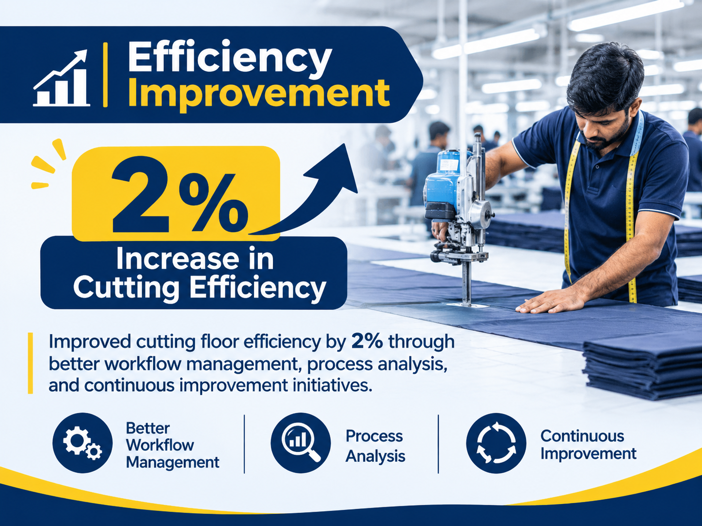
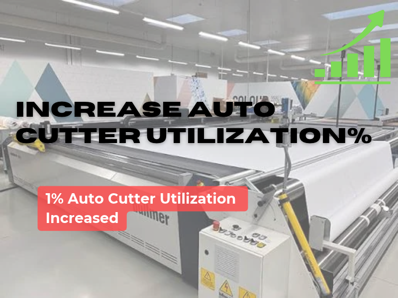
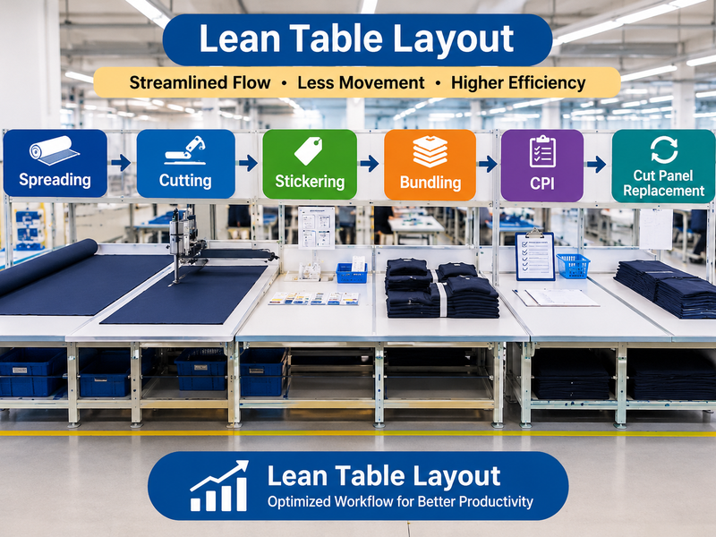
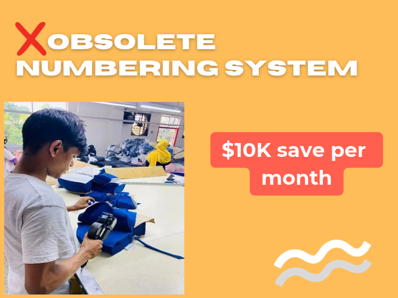

Tools I Use to Keep Your Company Developing
I work with industry-standard tools for Target Setting, data analysis, process improvement, workflow management, and performance monitoring.
Let's Discuss Your RequirementsTools I Apply
Industrial Engineering Achievements
Key improvements and achievements through process optimization, resource utilization, and continuous improvement.

8% Reduction in Cutting Manpower
Reduced cutting manpower by 8% through process improvement and work standardization. Released manpower was redeployed to other operational areas.

2% Increase in Cutting Efficiency
Improved cutting floor efficiency by 2% through better workflow management, process analysis, and continuous improvement initiatives.

1%+ Improvement in Auto Cutter Utilization
Increased auto cutter utilization by identifying machine idle time, improving work methods, and ensuring better process coordination.

SMV Standardization for 100+ Styles
Standardized SMV for more than 100 sewing styles through operation analysis, time study, and work measurement techniques.

Lean Table Layout Implementation
Implemented a lean table layout to improve material flow, reduce unnecessary transportation, and minimize waiting time.

Panel Stickering System Elimination
Eliminated the panel stickering system through process improvement, generating an estimated monthly saving of $10,000.
Ready to Improve Productivity & Efficiency?
I am eager to contribute my Industrial Engineering skills to optimize processes, improve productivity, and drive operational excellence.
Let's ConnectLet's Connect Professionally
Interested in working together? I'd be happy to connect.
Let's Discuss Opportunities.
I am interested in contributing my Industrial Engineering knowledge and experience to improve productivity, optimize processes, and enhance operational efficiency.